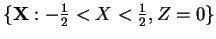
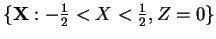

If the assumption of two-dimensionality is to be at all applicable to a
three-dimensional flow in a tall cavity or duct, it is most likely to be
so at the plane of spanwise symmetry ( ),
since this is furthest from the end-walls. The flow in this plane
is investigated here via the magnitude of the spanwise component of vorticity
at the centre line
),
since this is furthest from the end-walls. The flow in this plane
is investigated here via the magnitude of the spanwise component of vorticity
at the centre line  (the other components vanish there, by symmetry, for
the sections considered in this chapter) and the profile of the vertical
component of velocity along the line formed by the intersection of the
plane and an arbitrary horizontal section
.
(the other components vanish there, by symmetry, for
the sections considered in this chapter) and the profile of the vertical
component of velocity along the line formed by the intersection of the
plane and an arbitrary horizontal section
.